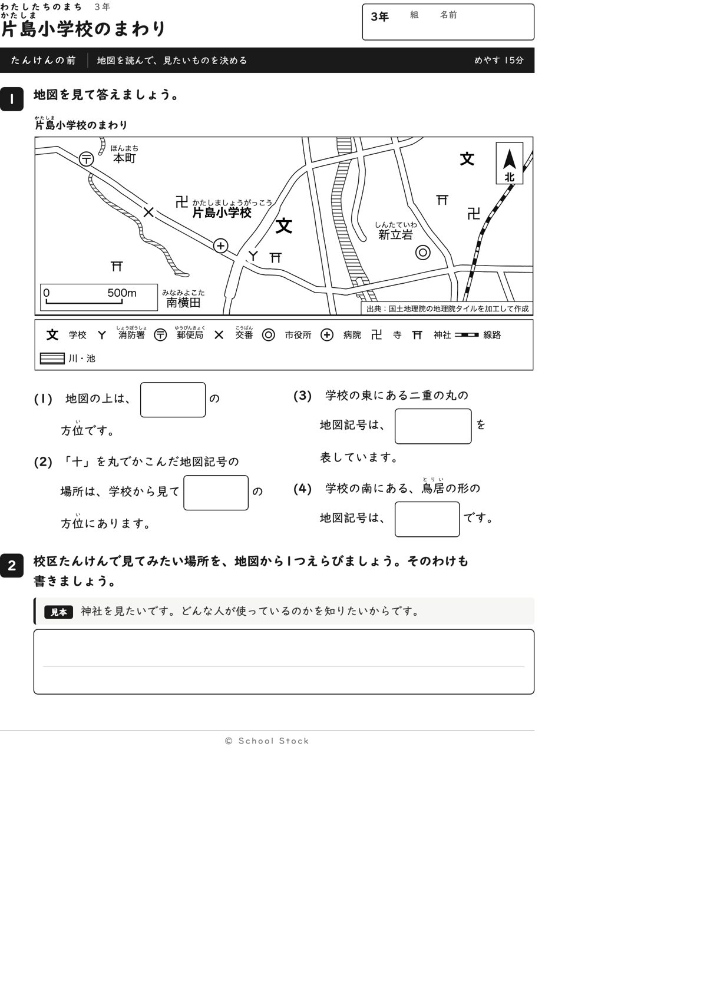
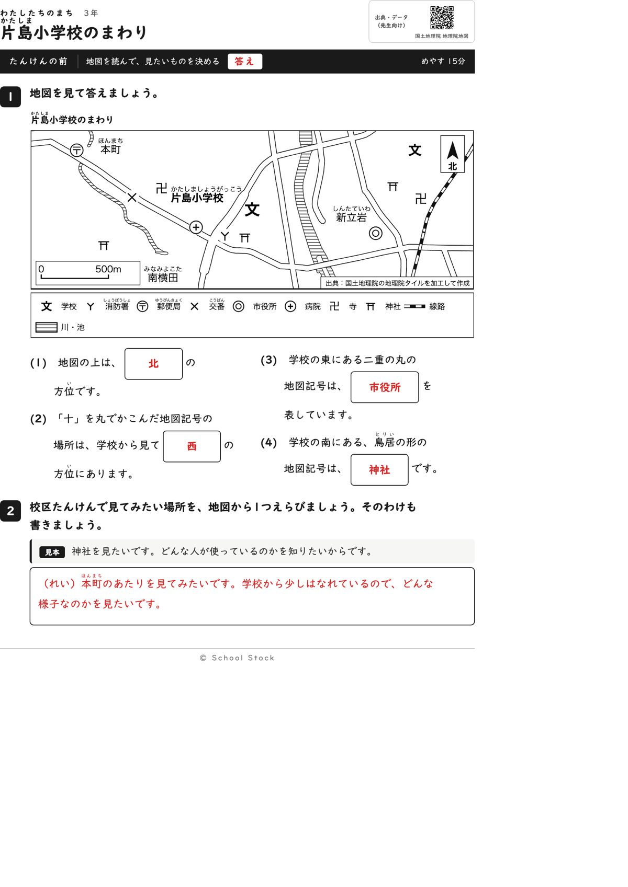
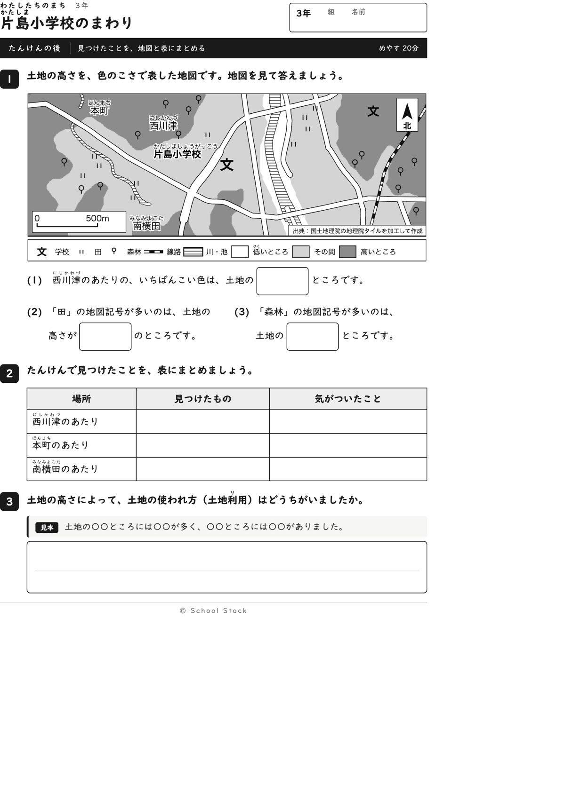
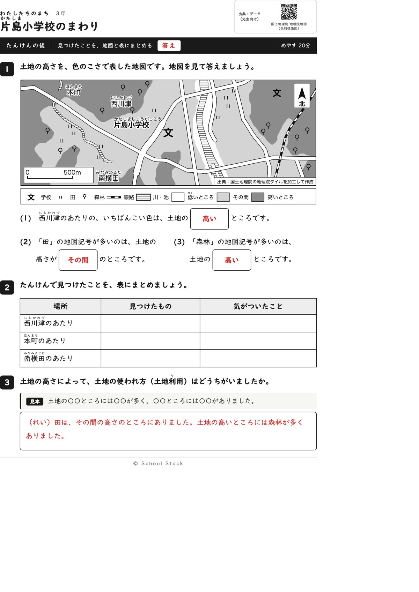
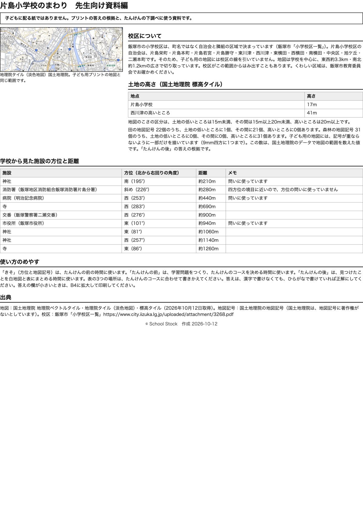

紙





直すところ
直すところはありません。
1回目のレビューで出た直し（2件・道具を直して作り直しました）
| 紙 | どこ | 何が困るか |
|---|---|---|
| たんけんの後 | 3番の問いの文「土地の高いところと低いところで、土地の使われ方はどうちがいましたか」 | この校区は、田が「その間」、森林が「高い」で、低いところにはほとんど何もありません。低いところを聞かれても書く内容がなく、答えの例とも合いません。 |
| たんけんの前 | (2)の答え「西」と(3)の問いの文「学校の西にある〒」 | (3)の文に「西」が出ているので、(2)の答えを文から写せます。答えが問いの文に出ている形になっています。 |
2回目のレビューで出た直し（1件・道具を直して作り直しました）
| 紙 | どこ | 何が困るか |
|---|---|---|
| たんけんの前 | (2)の答え「西」と(3)の問いの文「学校の西にある〒を丸でかこんだ」 | (3)の文に「西」と出ているため、(2)の答えを地図で確かめずに文から写せます。1回目の指摘がそのまま残っています。 |
専門家団の声（いまの紙を見て）
香月八重筆頭・全学年
2回目に指摘した、前の(2)の答え「西」が(3)の文に出ている点は直っています。いまは(2)が西、(3)が東の二重丸（市役所）、(4)が南の鳥居で、どの問いの文にも他の答えの方位は出ていません。後の3番も「土地の高さによって、土地の使われ方はどうちがいましたか」で、答えの例と合っています。3年の学習として順序もよいです。
日隈耕平社会
病院は約440m西、市役所は約940m東、神社は約210m南で、資料編の表と地図が合っています。田は22個中21個がその間、森林は31個すべてが高いところです。縮尺は白い地の上に載り、南横田の文字とも重なりません。森林の記号の数個が、地図では「その間」の色の境目に見えます。数は多数が濃い所なので答えは動きません。資料編にその一言があると先生が迷いません。これは希望で、直しではありません。
藤川湊すぐ終わる子
前の紙は、(2)(3)(4)とも記号を探して方位を数えるので、文を写して終わることがなくなりました。後の3番も型があって書けます。
田淵さくら例がないと止まる子
(2)は凡例と見比べて病院だと分かり、地図の上の方位を見て答えられます。後の3番は型が付いていて、書き出せます。
轟大和読む前に諦める子
前の1番は図を見て記号を探せば書けます。(2)の西は文から拾えないので、地図を見ることになります。後の紙は問いが短く、白紙にはなりません。校名の左に寺の記号が近いので、指でなぞって探す子がいるかもしれませんが、直すほどではありません。